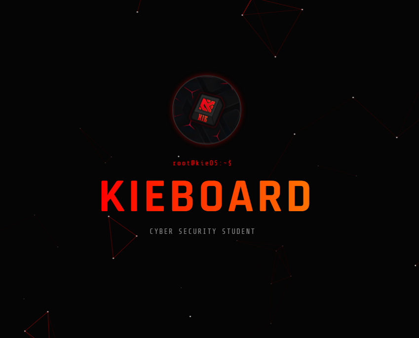

Projects / CTFs
Select a category to explore my work across CTFs, university, and personal projects.
CTF Hub
Live writeup repository for TryHackMe, HackTheBox and VulnHub. Covers web exploitation, privilege escalation, OSINT, and network attacks — each writeup documents the full methodology from recon to root.
Advent of Cyber 2025
Completed all 24 days of TryHackMe's annual challenge. Topics spanned OPSEC, log analysis with Splunk, malware reverse engineering, web app attacks, and AI prompt injection — all writeups documented in CTF Hub.
RootMe
Bypassed file upload restrictions to deploy a PHP web shell, then escalated to root by exploiting a SUID binary. Classic web exploitation + privilege escalation chain — good fundamentals room.
CupidBot
Exploited an IDOR vulnerability to access other users' data, then chained it with privilege escalation through a misconfigured web app. Good example of business logic flaws in the real world.
Cisco Networking (CCNA Track)
Core networking module covering TCP/IP, subnetting, routing protocols (OSPF, EIGRP), VLANs, switching, and network security fundamentals. Cisco Packet Tracer labs throughout.
Cyber Security Fundamentals
Threat modelling, cryptography, authentication, access control, and incident response. Covers both theoretical frameworks (CIA Triad, STRIDE) and practical application in enterprise environments.
Software Engineering & Architecture
Software design patterns, system architecture, distributed systems, and DevOps principles. Practical Python development with emphasis on writing maintainable, testable code.
Web & Mobile Technologies
Full-stack web development, RESTful APIs, mobile application fundamentals, and secure coding practices. Covered HTTP security headers, OWASP Top 10, and input validation in depth.

Portfolio Site
This site — a full terminal engine built in vanilla HTML/CSS/JS with no frameworks. Includes a virtual filesystem, 4 canvas games in floating windows, AI chat, guestbook, boot sequence, and 50+ terminal commands.

CTF Auto-Publisher
End-to-end automation pipeline: write rough notes in Notion → Python fetches and sends to Claude AI → formatted writeup committed to GitHub → GitHub Actions syncs to GitBook. Zero manual formatting, goes live in minutes.